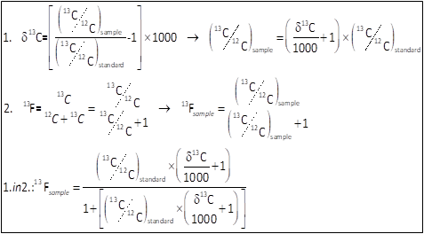
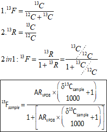

Code
library(tidyverse)
# install.packages("ggpmisc")
library("ggpmisc")
# install.packages("kableExtra")
library("kableExtra")library(tidyverse)
# install.packages("ggpmisc")
library("ggpmisc")
# install.packages("kableExtra")
library("kableExtra")First, I compute calibration curves linear regression models. Then, I use those equation to transform the areas under CO2 peaks (obtained from GC-FID) into CO2 ppm. Since the CO2 measurements were made in two separate sets. I end up with two different calibration curves.
calib_1 <- read_delim("./data_used/calibration_curve_GC-FID_Mishal.txt")
linear_reg_1 <- lm(ppm ~ 0 + area, data = calib_1 ) # the"+0" forces intercept through 0
slope_1 <- linear_reg_1$coefficientscalib_curve_1 <- ggplot(data = calib_1, aes(x = area, y = ppm)) +
geom_smooth(method = "lm",formula = y ~ x + 0, se = F, color = "black", size = 1, linetype = 5) +
# stat_poly_line(formula = y ~ x + 0) +
stat_poly_eq(formula = y ~ x + 0,
method = "lm",
use_label(c("eq", "r2")),
coef.digits = 7,
size= 4,
label.y = 0.75) +
geom_point(color = "cadetblue", size = 3)+
theme_classic()+
ggtitle("calibration curve for CO2 PP, PE and background", subtitle = "Mishal - June 2022") +
theme(axis.title.y = element_text(face = "bold"),
axis.title.x = element_text(face = "bold"),
axis.text.x = element_text(size = 11, face = "bold"),
axis.text.y = element_text(size = 11, face = "bold"))
calib_curve_1
calib_2 <- read_delim("./data_used/calibration_curve_kill_controls.txt")
linear_reg_2 <- lm(ppm ~ 0 + area, data = calib_2 )
slope_2 <- linear_reg_2$coefficients
I’ll use the calibration curves equations to calculate the ppm of CO2 in the head-spaces CO2_ppm = co2_area * slope. Then, from the concentration in (ppm), I determine the volume in (ml) CO2_HS_ml = HS_ml/1000000*CO2_ppm . After that, using the ideal gas law, I calculate the amount of CO2 in (mmol) CO2_mmol = ((pressure_bar+delta_pressure)*CO2_HS_ml)/(0.083145*(273.15+T_C)). Finally I convert to (µmol).
In this experiment, all incubations were left in a temperature controlled room at 22ºC, the difference in pressure delta_pressure was negligible (3 digits after 0). so we set that value to 0.
Reminder:
Ideal gas law: PV=nRT
If
the pressure P is in atmospheres (atm),
the volume V is in liters (L),
the moles n is in moles (mol),
and temperature T is in Kelvin (K)
Then R is in L⋅atm/mol⋅K.R has the value 0.082057 L⋅atm/mol⋅K with the above units for the rest of variables.
In other scenarios with pressure in (bar) instead, one may also use 0.083145 L⋅bar/mol⋅K.
However, temperature is always in Kelvin (K), as R uses units of K
kill_c <- read_delim("./data_used/kill_controls.txt")
kill_c <- kill_c |>
mutate(CO2_ppm = co2_area * slope_2) |>
mutate(CO2_HS_ml = HS_ml/1000000*CO2_ppm) |>
mutate(CO2_mmol = ((pressure_bar+delta_pressure)*CO2_HS_ml)/(0.083145*(273.15+T_C))) |>
mutate(CO2_umol = CO2_mmol*1000)
# write_csv(kill_c, "./data_used/kill_controls_calc1.csv")let’s calculate the averages for each incubation time and type.
kills_summary <- kill_c|>
group_by(incubation, time ) |>
summarise(average_CO2_mmol = mean(CO2_mmol), std_CO2_mmol = sd(CO2_mmol),
average_CO2_umol = mean(CO2_umol), std_CO2_umol = sd(CO2_umol),
average_delta_13c = mean(delta_13C), std_delta_13c = sd(delta_13C))|>
ungroup() #ungroup() needed to later convert chr to fct
# write_csv(kills_summary, "./data_used/kill_controls_summary.csv")experiment <- read_csv("./data_used/polymers_incubations.csv")
experiment <- experiment |>
mutate(CO2_ppm = co2_area * slope_1) |>
mutate(CO2_HS_ml = HS_ml/1000000*CO2_ppm) |>
mutate(CO2_mmol = ((pressure_bar+delta_pressure)*CO2_HS_ml)/(0.083145*(273.15+T_C))) |>
mutate(CO2_umol = CO2_mmol*1000)
# write_csv(experiment, "./data_used/polymers_incubations_calc1.csv")let’s calculate the averages for each incubation time and type.
experiment_summary <- experiment|>
group_by(incubation, time ) |>
summarise(average_CO2_mmol = mean(CO2_mmol), std_CO2_mmol = sd(CO2_mmol),
average_CO2_umol = mean(CO2_umol), std_CO2_umol = sd(CO2_umol),
average_delta_13c = mean(delta_13C, na.rm = T), std_delta_13c = sd(delta_13C, na.rm =T) ) |>
ungroup()
experiment_summary
# write_csv(experiment_summary, "./data_used/polymers_incubations_summary.csv")one of the variable I’ll need later is the liquid phase volume in liter, which is 150 (ml) in my experiment. Here I upload it as liquid_L <- 0.15 .
In order to calculate total CO2 amounts. the amount of CO2 in the liquid phase need to be added to the values calculated for the headspace in [CO2 in head-space].
One of the issues encountered here is that it wasn’t possible to sub-sample for DIC measurements in each timepoint. (we are following CO2 production here so opening up our bottles isn’t an option). what I have is DIC measurements at the beginning and the end of the experiment. as CO2 production followed a linear trend, I’ll assume the same for DIC. So now I’ll calculate the linear regression for the evolution of CO2 in the liquid phase for each type incubation
DIC_tab <- read_delim("./data_used/DIC_measures.txt")
DIC_summary <- DIC_tab |>
group_by(incubation,time) |>
summarise(average_DIC_uM = mean(DIC_uM), std_DIC_uM = sd(DIC_uM)) |>
mutate(DIC_L_Phase = average_DIC_uM*liquid_L)
Co2_HS <- rbind((experiment_summary |> select(incubation, time, average_CO2_umol)),
(kills_summary |> select(incubation, time, average_CO2_umol)))
DIC_models <- left_join(DIC_summary, Co2_HS) |> #Joining with `by = join_by(incubation, time)`
mutate(ratio = average_CO2_umol/DIC_L_Phase)|>
ungroup()
DIC_models$std_DIC_uM <- NULL
# write_csv(DIC_models, "./data_used/DIC_models.csv")safe <- c ("#CC6677", "#DDCC77","#88CCEE" ,"#661100", "#117733",
"#332288", "#44AA99", "#882255",
"#6699CC", "#999933", "#888888","#AA4499" ) #palette
models_DIC_plot <- ggplot(data = DIC_models,
aes(x = time, y = ratio, group = incubation)) +
facet_grid(~incubation)+
geom_point( aes(shape = incubation, color = incubation),
size = 3)+
scale_color_manual(values= safe)+
geom_smooth(method = "lm",
formula = y ~ x ,
se = F,
color = "black",
size = 1,
linetype = 5) +
stat_poly_eq(formula = y ~ x ,
method = "lm",
use_label(c("eq", "r2")),
coef.digits = 10,
size= 2) +
theme_minimal()+
ylim(0,0.015)+
ggtitle("DIC linear regressions",
subtitle = "") +
theme(axis.title.y = element_text(face = "bold"),
axis.title.x = element_text(face = "bold"),
axis.text.x = element_text(size = 11, face = "bold"),
axis.text.y = element_text(size = 11, face = "bold"),
legend.position="bottom" )
models_DIC_plot 
DIC_models <- DIC_models |>
mutate(across(where(is_character),as_factor))
for (i in 1:length(levels(DIC_models$incubation))) {
linear_reg <- lm(ratio ~time , data = DIC_models[DIC_models$incubation == levels(DIC_models$incubation)[i], ])
assign(paste0("slope_linear_reg_", levels(DIC_models$incubation)[i]),
linear_reg$coefficients[["time"]])
assign(paste0("intercept_linear_reg_", levels(DIC_models$incubation)[i]),
linear_reg$coefficients[["(Intercept)"]])
}
mDIC_kill_PE <- function(x) intercept_linear_reg_Kill_13C_PE + x * slope_linear_reg_Kill_13C_PE
mDIC_kill_PP <- function(x) intercept_linear_reg_Kill_13C_PP + x * slope_linear_reg_Kill_13C_PP
mDIC_PE <- function(x) intercept_linear_reg_PE + x * slope_linear_reg_PE
mDIC_PP <- function(x) intercept_linear_reg_PP + x * slope_linear_reg_PP
mDIC_SW_background <- function(x) intercept_linear_reg_SW_background + x * slope_linear_reg_SW_backgroundkills_total_C <- kill_c |>
mutate(mDIC = if_else(incubation == "Kill_13C_PE", CO2_umol/mDIC_kill_PE(time), if_else(incubation == "Kill_13C_PP", CO2_umol/mDIC_kill_PP(time),NA))) |>
mutate(total_C_umol= CO2_umol + mDIC)
# write_csv(kills_total_C,"./data_used/kills_total_c.csv")experiment_total_C <- experiment |>
mutate(mDIC = if_else(incubation == "PE", CO2_umol/mDIC_PE(time), if_else(incubation == "PP", CO2_umol/mDIC_PP(time), if_else(incubation == "SW_background", CO2_umol/mDIC_SW_background(time), NA)))) |>
mutate(total_C_umol= CO2_umol + mDIC)
# write_csv(experiment_total_C,"./data_used/experiment_total_C.csv")To calculate the amounts of 13C-PE and 13C-PP degraded, I’ll need to determine the fraction of 13C in the systems.
starting from the measured 𝝳13C values:

where 13F is:

vpdb designates the Vienna PeeDee Belemnite isotopic standard. Rvpdb has a set value of 0.011179601676131as it is after all a standard.
the volume added in the incubation bottles of 13C-PE and 13C-PP soups is 1.5 ml designated as volume_added_ml.
The DOC (µM) measured for the ‘soups’ are loaded as PP_DOC_uM and PE_DOC_uM. Then the amount added (µmol) to the incubations is calculated for PP PP_DOC_injected_umol and PE PE_DOC_injected_umol .
Rvpdb <- 0.0111796016761313 #set value
volume_added_ml <- 1.5 #volume plastic soup added
PP_DOC_uM <- 2290.2 #DOC mesured for PP soup
PP_DOC_injected_umol <- (PP_DOC_uM*(volume_added_ml/1000))
PE_DOC_uM <- 271.9 #DOC measured for PE soup
PE_DOC_injected_umol <- (PE_DOC_uM*(volume_added_ml/1000))This is the first step, as it will be used as baseline to correct the 13C fraction that is only due to the seawater.
background <- round(mean((filter(experiment, incubation =="SW_background",))$delta_13C, na.rm = T), digits = 1)
fract_13C_backgrounnd <- (Rvpdb*((background/(1000)+1)))/((Rvpdb*((background/(1000)+1)))+1)
perc_fract_13C_backgrounnd <- fract_13C_backgrounnd*100I will calculate the excess 13CO2 in the kill controls and calculate the linear regression a model. This is necessary to get the values at all time which will be necessary to get a net excess 13CO2 production in the incubations later on in [13C-PE degradation] and [13C-PP degradation].
the standard deviation of the 𝝳13C Seawater background through time is negligible <1. So, the mean (variable background) will be used to correct for the background in all subsequent calculations.
kill_c_fract <- kills_total_C |>
select(incubation, time, total_C_umol, delta_13C) |>
mutate(Fract13_CO2 = (Rvpdb*((delta_13C/(1000)+1)))/((Rvpdb*((delta_13C/(1000)+1)))+1)) |>
mutate(perc_13C = Fract13_CO2*100) |>
mutate(D13C_CO2_perc = perc_13C - perc_fract_13C_backgrounnd) |>
mutate(excess_13CO2_umol = total_C_umol/100*D13C_CO2_perc)
# write_csv(kill_c_fract,"./data_used/kill_c_fract.csv")
average_excess_kills <- kill_c_fract |>
group_by(incubation,time) |>
summarise(average_excess_13CO2_umol = mean(excess_13CO2_umol),
std_excess_13CO2_umol = sd(excess_13CO2_umol)) |>
ungroup()
# write_csv(average_excess_kills,"./data_used/average_excess_kills.csv")plot_excess_kills <- ggplot(data = average_excess_kills,
aes(x = time, y = average_excess_13CO2_umol, group = incubation)) +
facet_grid(~incubation)+
geom_point( aes( color = incubation),
size = 3)+
scale_color_manual(values = c("#F0D23C", "#433CF0"))+
geom_smooth(method = "lm",
formula = y ~ x ,
se = F, color = "black",
size = 1,
linetype = 5) +
stat_poly_eq(method = "lm",
formula = y ~ x ,
aes(label = after_stat(eq.label)),
coef.digits = 10,
size= 4) +
theme_minimal()+
ylim(0,1)+
ggtitle("average excess 13-co2 in kill controls",
subtitle = "linear regressions") +
theme(axis.title.y = element_text(face = "bold"),
axis.title.x = element_text(face = "bold"),
axis.text.x = element_text(size = 11, face = "bold"),
axis.text.y = element_text(size = 11, face = "bold"),
legend.position = "top")
plot_excess_kills 
Now, I’ll calculate the linear models for excess 13CO2 production in the 13C-PP kills controls and 13C-PE kill controls. This production isn’t due to biological processes. These will be used as baseline to correct the excess 13CO2 production in the live incubations.
average_excess_kills <- average_excess_kills |>
mutate(across(where(is_character),as_factor))
for (i in 1:length(levels(average_excess_kills$incubation))) {
linear_reg <- lm(average_excess_13CO2_umol ~time ,
data = average_excess_kills[average_excess_kills$incubation == levels(average_excess_kills$incubation)[i], ])
assign(paste0("slope_", levels(average_excess_kills$incubation)[i]),
linear_reg$coefficients[["time"]])
assign(paste0("intercept_", levels(average_excess_kills$incubation)[i]),
linear_reg$coefficients[["(Intercept)"]])
}
excess_kill_PE <- function(x) intercept_Kill_13C_PE + x * slope_Kill_13C_PE
excess_kill_PP <- function(x) intercept_Kill_13C_PP + x * slope_Kill_13C_PPPE_deg <- experiment_total_C |>
filter(incubation =="PE", time >0) |>
select(incubation, time, total_C_umol, delta_13C) |>
drop_na() |>
mutate(Fract13_CO2 = (Rvpdb*((delta_13C/(1000)+1)))/((Rvpdb*((delta_13C/(1000)+1)))+1)) |>
mutate(perc_13C = Fract13_CO2*100) |>
mutate(D13C_CO2_perc = perc_13C - perc_fract_13C_backgrounnd) |>
mutate(excess_13CO2_umol = total_C_umol/100*D13C_CO2_perc) |>
mutate(excess_13C_kill_umol = excess_kill_PE(time)) |>
mutate(Net_excess_13C_umol = excess_13CO2_umol - excess_13C_kill_umol)
# write_csv(PE_deg,"./data_used/PE_degradartion.csv")
PE_deg_summary <- PE_deg |>
group_by(incubation,time) |>
summarise(average_excess_13CO2_umol = mean(excess_13CO2_umol),
std_excess_13CO2_umol = sd(excess_13CO2_umol),
average_Net_excess_13C_umol = mean(Net_excess_13C_umol),
std_Net_excess_13C_umol = sd(Net_excess_13C_umol)) |>
mutate(perct_degradation = average_Net_excess_13C_umol/PE_DOC_injected_umol*100) |>
mutate(sd_perct_deg = std_Net_excess_13C_umol/average_Net_excess_13C_umol*perct_degradation) |>
ungroup()
# write_csv(PE_deg_summary,"./data_used/PE_degradartion_summary.csv")| incubation | time | average_excess_13CO2_umol | std_excess_13CO2_umol | average_Net_excess_13C_umol | std_Net_excess_13C_umol | perct_degradation | sd_perct_deg |
|---|---|---|---|---|---|---|---|
| PE | 24 | 0.5891479 | 0.0117035 | 0.1280705 | 0.0117035 | 31.40138 | 2.869559 |
| PE | 72 | 0.6329391 | 0.0246419 | 0.1732285 | 0.0246419 | 42.47359 | 6.041906 |
| PE | 96 | 0.6093867 | 0.0172494 | 0.1503596 | 0.0172494 | 36.86639 | 4.229354 |
| PE | 192 | 0.5069581 | 0.0182046 | 0.0506645 | 0.0182046 | 12.42235 | 4.463545 |
| PE | 216 | 0.6419121 | 0.0383434 | 0.1863019 | 0.0383434 | 45.67901 | 9.401350 |
| PE | 240 | 0.6311365 | 0.0127988 | 0.1762097 | 0.0127988 | 43.20454 | 3.138111 |
| PE | 264 | 0.6314236 | 0.0499687 | 0.1771802 | 0.0499687 | 43.44248 | 12.251728 |
| PE | 336 | 0.6876738 | 0.0216128 | 0.2354805 | 0.0216128 | 57.73705 | 5.299194 |
| PE | 360 | 0.6776854 | 0.0131558 | 0.2261755 | 0.0131558 | 55.45557 | 3.225644 |
| PE | 384 | 0.7007004 | 0.0141444 | 0.2498740 | 0.0141444 | 61.26615 | 3.468028 |
| PE | 408 | 0.6789594 | 0.0581656 | 0.2288163 | 0.0581656 | 56.10306 | 14.261511 |
| PE | 432 | 0.5901102 | 0.0208020 | 0.1406505 | 0.0208020 | 34.48585 | 5.100412 |
| PE | 504 | 0.6888762 | 0.0253433 | 0.2414668 | 0.0253433 | 59.20480 | 6.213885 |
| PE | 552 | 0.6686987 | 0.0203169 | 0.2226560 | 0.0203169 | 54.59263 | 4.981465 |
| PE | 600 | 0.7066194 | 0.0231106 | 0.2619435 | 0.0231106 | 64.22545 | 5.666437 |
| PE | 696 | 0.6612643 | 0.0091100 | 0.2193220 | 0.0091100 | 53.77516 | 2.233675 |
plot_PE_net <- ggplot(data = PE_deg_summary, aes(x = time, y = average_Net_excess_13C_umol)) +
geom_point(color = "#8F5D72", size = 3)+
geom_errorbar(aes(ymin=average_Net_excess_13C_umol-std_Net_excess_13C_umol,
ymax=average_Net_excess_13C_umol+std_Net_excess_13C_umol),
width=.2, position=position_dodge(0.05))+
# scale_color_manual(values= "#8F5D72")+
geom_smooth(method = "lm",
formula = y ~ x ,
se = F,
color = "black",
size = 1,
linetype = 5) +
stat_poly_eq(formula = y ~ x ,
method = "lm",
use_label(c("eq", "r2")),
coef.digits = 10,
size= 4,
label.y = 0.8) +
theme_minimal()+
ylim(0,0.5)+
ggtitle("neto ¹³Co2 production ¹³C-PE incubations", subtitle = "") +
theme(axis.title.y = element_text(face = "bold"),
axis.title.x = element_text(face = "bold"),
axis.text.x = element_text(size = 11, face = "bold"),
axis.text.y = element_text(size = 11, face = "bold"))
plot_PE_net 
plot_PE_percent <- ggplot(data = PE_deg_summary,
aes(x = time, y = perct_degradation)) +
geom_point( color = "#8F5D72", size = 3)+
geom_errorbar(aes(ymin=perct_degradation-sd_perct_deg,
ymax=perct_degradation+sd_perct_deg),
width=0.3, position=position_dodge(0.05))+
geom_smooth(method = "lm",
formula = y ~ x ,
se = F,
color = "black",
size = 1,
linetype = 5) +
stat_poly_eq(formula = y ~ x ,
method = "lm",
use_label(c("eq", "r2")),
coef.digits = 10,
size= 4,
label.y = 0.85) +
theme_minimal()+
ylim(0,100)+
ylab("Percentage of degradation")+
ggtitle("¹³C-PE degradation", subtitle = "") +
theme(axis.title.y = element_text(face = "bold"),
axis.title.x = element_text(face = "bold"),
axis.text.x = element_text(size = 11, face = "bold"),
axis.text.y = element_text(size = 11, face = "bold"))
plot_PE_percent 
PP_deg <- experiment_total_C |>
filter(incubation =="PP", time >0) |>
select(incubation, time, total_C_umol, delta_13C) |>
drop_na() |>
mutate(Fract13_CO2 = (Rvpdb*((delta_13C/(1000)+1)))/((Rvpdb*((delta_13C/(1000)+1)))+1)) |>
mutate(perc_13C = Fract13_CO2*100) |>
mutate(D13C_CO2_perc = perc_13C - perc_fract_13C_backgrounnd) |>
mutate(excess_13CO2_umol = total_C_umol/100*D13C_CO2_perc) |>
mutate(excess_13C_kill_umol = excess_kill_PP(time)) |>
mutate(Net_excess_13C_umol = (excess_13CO2_umol - excess_13C_kill_umol)*3) #the x3 is because only one in every 3 carbon atoms are labelled in the bought 13C-PP powder
# write_csv(PP_deg,"./data_used/PP_degradartion.csv")
PP_deg_summary <- PP_deg |>
group_by(incubation,time) |>
summarise(average_excess_13CO2_umol = mean(excess_13CO2_umol),
std_excess_13CO2_umol = sd(excess_13CO2_umol),
average_Net_excess_13C_umol = mean(Net_excess_13C_umol),
std_Net_excess_13C_umol = sd(Net_excess_13C_umol)) |>
mutate(perct_degradation = average_Net_excess_13C_umol/PP_DOC_injected_umol*100) |>
mutate(sd_perct_deg = std_Net_excess_13C_umol/average_Net_excess_13C_umol*perct_degradation) |>
ungroup()
# write_csv(PP_deg_summary,"./data_used/PP_degradartion_summary.csv")| incubation | time | average_excess_13CO2_umol | std_excess_13CO2_umol | average_Net_excess_13C_umol | std_Net_excess_13C_umol | perct_degradation | sd_perct_deg |
|---|---|---|---|---|---|---|---|
| PP | 24 | 0.6401029 | 0.0187346 | 0.4084752 | 0.0562039 | 11.89053 | 1.636069 |
| PP | 72 | 0.9169137 | 0.0329115 | 1.2321487 | 0.0987345 | 35.86728 | 2.874115 |
| PP | 96 | 0.9145265 | 0.0549144 | 1.2216078 | 0.1647433 | 35.56044 | 4.795602 |
| PP | 192 | 0.9358056 | 0.0540014 | 1.2719274 | 0.1620043 | 37.02522 | 4.715870 |
| PP | 216 | 0.9794037 | 0.0374438 | 1.3993422 | 0.1123313 | 40.73421 | 3.269913 |
| PP | 240 | 0.9870650 | 0.0344319 | 1.4189466 | 0.1032956 | 41.30488 | 3.006887 |
| PP | 264 | 1.0438816 | 0.0777938 | 1.5860169 | 0.2333813 | 46.16822 | 6.793621 |
| PP | 336 | 1.0669925 | 0.0465272 | 1.6452114 | 0.1395815 | 47.89135 | 4.063153 |
| PP | 360 | 1.0783708 | 0.0337229 | 1.6759669 | 0.1011688 | 48.78662 | 2.944977 |
| PP | 384 | 1.1033007 | 0.0984060 | 1.7473771 | 0.2952180 | 50.86534 | 8.593660 |
| PP | 408 | 0.9319133 | 0.0361741 | 1.2298355 | 0.1085222 | 35.79994 | 3.159030 |
| PP | 432 | 1.0254757 | 0.1024179 | 1.5071433 | 0.3072536 | 43.87225 | 8.944010 |
| PP | 504 | 1.0744701 | 0.0677970 | 1.6439882 | 0.2033910 | 47.85574 | 5.920620 |
| PP | 552 | 1.1097607 | 0.0246624 | 1.7431009 | 0.0739872 | 50.74086 | 2.153733 |
| PP | 600 | 1.1464185 | 0.0207525 | 1.8463155 | 0.0622574 | 53.74539 | 1.812283 |
| PP | 696 | 1.0843282 | 0.0461662 | 1.6465269 | 0.1384987 | 47.92964 | 4.031635 |
plot_PP_net <- ggplot(data = PP_deg_summary,
aes(x = time, y = average_Net_excess_13C_umol)) +
geom_point( color = "#5D8F5F", size = 3)+
geom_errorbar(aes(ymin=average_Net_excess_13C_umol-std_Net_excess_13C_umol,
ymax=average_Net_excess_13C_umol+std_Net_excess_13C_umol),
width=.2,
position=position_dodge(0.05))+
geom_smooth(method = "lm",
formula = y ~ x ,
se = F,
color = "black",
size = 1,
linetype = 5) +
stat_poly_eq(formula = y ~ x ,
method = "lm",
use_label(c("eq", "r2")),
coef.digits = 10,
size= 4,
label.y = 0.2) +
theme_minimal()+
# ylim(0,5)+
ggtitle("neto ¹³Co2 production ¹³C-PP incubations", subtitle = "") +
theme(axis.title.y = element_text(face = "bold"),
axis.title.x = element_text(face = "bold"),
axis.text.x = element_text(size = 11, face = "bold"),
axis.text.y = element_text(size = 11, face = "bold"))
plot_PP_net 
plot_PP_percent <- ggplot(data = PP_deg_summary,
aes(x = time, y = perct_degradation)) +
geom_point( color = "#5D8F5F", size = 3)+
geom_errorbar(aes(ymin=perct_degradation-sd_perct_deg,
ymax=perct_degradation+sd_perct_deg),
width=0.3,
position=position_dodge(0.05))+
geom_smooth(method = "lm",
formula = y ~ x ,
se = F,
color = "black",
size = 1,
linetype = 5) +
stat_poly_eq(formula = y ~ x ,
method = "lm",
use_label(c("eq", "r2")),
coef.digits = 10,
size= 4,
label.y = 0.85) +
theme_minimal()+
ylim(0,100)+
ggtitle("¹³C-PP degradation percentage", subtitle = "") +
theme(axis.title.y = element_text(face = "bold"),
axis.title.x = element_text(face = "bold"),
axis.text.x = element_text(size = 11, face = "bold"),
axis.text.y = element_text(size = 11, face = "bold"))
plot_PP_percent